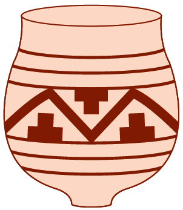
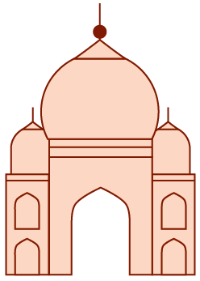
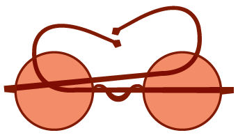

Height of Indus Valley Civilization
Alexander the Great establishes Greek colonies in the Indus Valley
Indo-European tribes from Central Asia colonize northern India, which adopts their language (Sanskrit), their Vedic religion (the basis of Hinduism), and their social hierarchy (the Brahmanic caste system)
Division of India into the Pallava and Chola dynasties in the South and the Arab–dominated Sind nation in the North
Foundation and dominance of the Mughal dynasty
Creation of the Sultanate of Delhi under Muslim hegemony
Vasco de Gama disocovers a sea route to India
Establishment of British East India Company
Treaty of Paris ends Seven Years’ War between France and Great Britain
Establishment of Indian National Congress
Mahatma Gandhi launches a campaign of civil disobedience against Britain
Warren Hastings serves as Governor General of Bengal and organizes its colonization
Great Britain conquers Southern India, the Ganges Valley and Delhi, and defeats the Marathas
The Great Rebellion of 1857 and its suppression lead to direct British rule of India
First Indo-Pakistani war over Kashmir
A new constitution establishes India as a federal, secular, and parliamentary state, organized on ethnic and linguistic grounds
India successfully tests a missile with nuclear capability
India becomes independent within the Commonwealth of Nations and is divided into two states: the Indian Union, with a Hindu majority, and Pakistan, with a Muslim majority
Second Indo-Pakistani war over Kashmir
A third Indo-Pakistani war leads to the formation of East Pakistan as the nation of Bangladesh